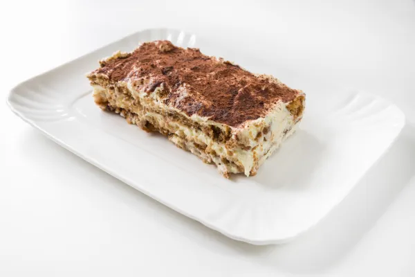

Pay de Queso con Oreo o Chokis
|
- 1 lata de leche evaporada
- 1 lata de leche condensada
- 190gr de queso philadelfia
- 1 cucharadita de vainilla
- 2 huevos
- 16 galletas oreo o chokis (12 trituradas)
- 1 cucharada de mantequilla (derretir)
|
- Triturar las galletas oreo puedes hacerlo dentro del mismo molde con una taza las aplastas o en una bolsita o en la licuadora/procesadora
- Pones en el molde y añades la mantequilla derretida mezclas y comienzas a acomodarla por todo el fondo de tu molde
- Refrigera mientras pones en tu licuadora los demás ingredientes, no olvides encender en horno para que se precaliente a 180 grados
- Vierte la mezcla en el molde, añade las galletas oreo que nos sobraron en trozos y lleva al horno por 45 minutos.
- Revisa con un palillo que esté bien cocido, debe salir limpio
- Apaga el horno y dejalo así 5 minutos, después abre un poco la puerta del horno por otros 10 minutos y después ya lo sacas
- Déjalo enfriar y después lo refrigeras 1 hora.
- Sabe delicioso.!! 🥰
|
 |
Postre de milo
|
- 1 paquete de galletas Ducales o similares
- 1 lata de leche condensada
- 190gr de queso philadelfia
- 1 lata de crema de leche
- 1 taza (250ml) de leche entera de vaca
- ½ taza aproximadamente de cacao en polvo milo o de otra marca
- 4 cucharadas de fécula de maíz (maicena)
|
- Vierte en un cazo la lata de leche condensada junto a la de crema de leche y ponlo a calentar a fuego lento. Remover constantemente con una cuchara de madera
- Poner la leche de vaca en un vaso ancho o jarra y añade la maicena mezclando muy bien hasta su completa disolución
- Llega el momento de mezclar las tres leches incorporando la de vaca con la maicena ya integrada, pues bien, debemos incorporar los ingredientes
- Mezcla y remueve lentamente hasta llegar al punto de ebullición. La mezcla de las tres leches deberá ir espesando y ganando consistencia. Cuando comience a hervir, remueve un minuto más y retira del fuego
- Una vez que tengas en su punto la deliciosa crema de leche, que será la base de tu postre de milo, tendrás que empezar a montar tu tarta utilizando el molde que prefieras
- Coloca en el fondo del molde una primera capa de galletas Ducales
- Cuando hayas colocado esta primera capa de galletas, vierte sobre ella unas cucharadas de la crema que has preparado
- Puedes hacer tu postre de milo con cuantas capas quieras, aunque lo ideal es hacer tres o máximo cuatro.
|
 |
Churros Rellenos
|
- 1/2 taza de cocoa en polvo
- 4 cucharaditas de Fécula de Maíz Regular Maizena®
- 190gr de queso philadelfia
- 1 lata de crema de leche
- 1 taza (250ml) de leche entera de vaca
- ½ taza aproximadamente de cacao en polvo milo o de otra marca
- 4 cucharadas de fécula de maíz (maicena)
|
- En una olla mediana a fuego bajo agrega la cocoa, la Fécula de Maíz Maizena® y la la mitad de la leche. Mueve muy bien y poco a poco incorpora la leche restante. Deja que hierva y que espese por 5 minutos. No dejes de mover, para que no se pegue.
- Añade la vainilla y retira del fuego. Deja que baje a temperatura ambiente y reserva para rellenar los churros.
- Hervir el agua y agregar la barra de mantequilla hasta que se derrita. Una vez que suelte el hervor, agregar el harina y el azúcar.
- Cocinar a fuego medio moviendo constantemente o hasta que se forme una masa uniforme. Dejar entibiar.
- Agregar los huevos uno a uno y batir constantemente hasta que no haya grumos. Colocar la masa en una manga pastelera con duya rizada (o duya para churros) y reservar.
- Poner a calentar el aceite en una olla profunda y freír los churros de poco a poco hasta terminar con la masa.
- Pasarlos inmediatamente por el azúcar y canela. Rellenarlos con el chocolate.
|
 |